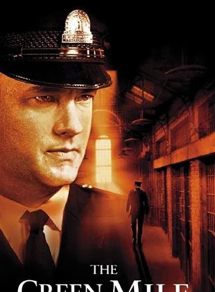

Özet: Baba, 40’lar ve 50’lerin Amerika’sında, bir İtalyan
mafya ailesinin destansı öyküsünü konu alıyor. Don Corleone’nin kızı
Connie’nin düğününde, ailenin en küçük oğlu ve bir savaş gazisi olan
Michael babasıyla barışır.
Bir suikast girişimi, Don’u artık işleri yönetemeyecek duruma düşürünce,
ailenin başına Michael ve ağabeyi Sonny geçer. Danışmanları Tom Hagen’in
de yardımlarıyla diğer ailelere savaş açan Corleone ailesi, eski moda
yöntemleri de değiştirmeye başlar.
Mario Puzo’nun çok satan kitabından Puzo ve yönetmen Francis Ford Coppola
tarafından sinemaya uyarlanan film o yıl En İyi Film, En İyi Erkek Oyuncu
ve En İyi Uyarlama Senaryo dallarında Oscar kazanmıştır.
Yapılan araştırmalar sonucu Türkiye'de en fazla izlenen ve satılan film
olma özelliği de taşır.
1. Baba, The Godfather

Siteyi Ziyaret Et
Yönetmen: Francis Ford Coppola
2. Yüzüklerin Efendisi: Kralın Dönüşü

Siteyi Ziyaret Et
Yönetmen: Peter Jackson
Özet: Yüzüklerin Efendisi: Kralın Dönüşü, Tek Yüzük'ün yok
edilmesi için verilen mücadeleyi konu ediyor. Sauron'un orduları büyüdükçe
büyümektedirler.
Frodo ve onun can dostu Sam, korku dolu bir yolculuğun göbeğinde, korkunç
Mordor'a adım adım yaklaşmaktadırlar.
Tek yüzük yok edilmelidir ve iyilik bunun için savaşmaya hazırdır. Arka
planda ise insan, elf ve cüce orduları, karanlık güçlerin karşısında tüm
eski düşmanlıklarına rağmen bir araya gelmişlerdir.
Hepsi birden küçücük bir Hobbit'in eline ve onun yeteneklerine
bakmaktadırlar. Orta Dünya'nın kaderi belli olmak üzeredir. Ancak Tek
Yüzük'ü sahiplenmek, kimi zaman taşıyanına daha cazip gelebilir.
3. Yeşil Yol, The Green Mile
Siteyi Ziyaret Et
Yönetmen: Frank Darabont
Özet:Yeşil Yol, bir hapishane görevlisi ile bir mahkumun
öyküsünü anlatıyor. Paul Edgecomb'un hapishanedeki görevi, idama mahkum
edilen mahkumları son yolculuklarına uğurlamaktır.
Çalıştığı yıllar içerisinde yüzlerce mahkumu idam etmiştir. Bir gün John
Coffey isimli korkutucu görünümlü bir adamla tanışır.
Ancak Coffey'in bu ürkütücü görünümünün altında oldukça saf bir ruh
yatmaktadır. Coffey, iki küçük kız çocuğunun katil davasında
yargılanmaktadır.
Coffey'in günden güne gün yüzüne çıkan dünya ötesi
güçleri, karakteri hakkında yeni ipuçlarını anbean ortaya çıkaracaktır.